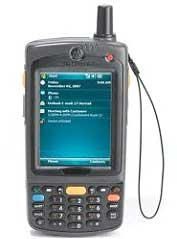
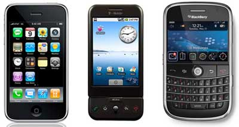
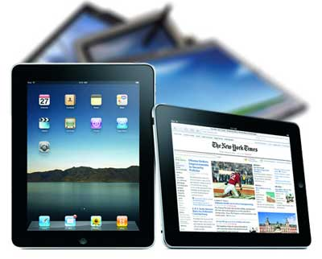

Classification page
links
- main page>
- Mobile communication
- Security Issues
- Resources
- Major Advantages
- Classification
Personal Digital Assistant (PDA)
The main purpose of this device is to act as an electronic organizer or day planner that is portable, easy to use and capable of sharing information with your computer systems.
PDA is an extension of the PC, not a replacement. These systems are capable of sharing information with a computer system through a process or service known as synchronization.
Both devices will access each other to check for changes or updates in the individual devices. The use of infrared and Bluetooth connections enables these devices to always be synchronized.
PDA Mobile Device
With PDA devices, a user can browse the internet, listen to audio clips, watch video clips, edit and modify office documents,
and many more services. The device has a stylus and a touch sensitive screen for input and output purposes.

Smartphones
This kind of phone combines the features of a PDA with that of a mobile phone or camera phone. It has a superior edge over other kinds of mobile phones.
Smartphones have the capability to run multiple programs concurrently. These phones include high-resolution touch screens,
web browsers that can access and properly display standard web pages rather than just mobile-optimized sites, and high-speed data access via Wi-Fi and high speed cellular broadband.
The most common mobile Operating Systems (OS) used by modern smartphones include Google's Android, Apple's iOS,
Nokia's Symbian, RIM's BlackBerry OS, Samsung's Bada, Microsoft's Windows Phone, and embedded Linux distributions such as Maemo and MeeGo. Such operating systems can be installed on different phone models, and typically each device can receive multiple OS software updates over its lifetime.

Tablet PC and iPads
This mobile device is larger than a mobile phone or a PDA and integrates into a touch screen and is operated using touch sensitive motions on the screen. They are often controlled by a pen or by the touch of a finger. They are usually in slate form and are light in weight. Examples would include ipads, Galaxy Tabs, Blackberry Playbooks etc.
Tablet PC and I-Pads
They offer the same functionality as portable computers. They support mobile computing in a far superior way and have enormous processing horsepower. Users can edit and modify document files, access high speed internet, stream video and audio data, receive and send e-mails, attend/give lectures and presentations among its very many other functions.
They have excellent screen resolution and clarity.
